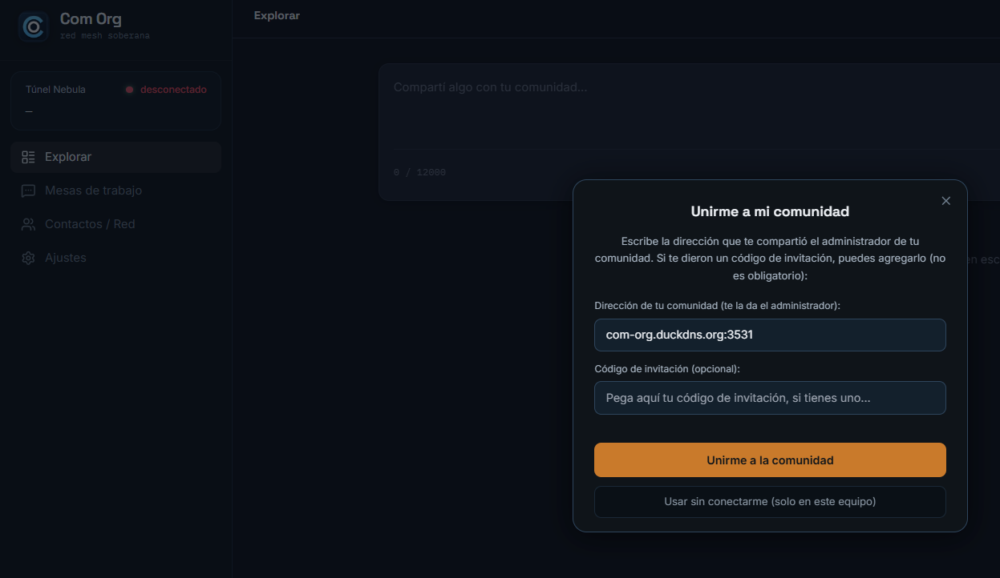
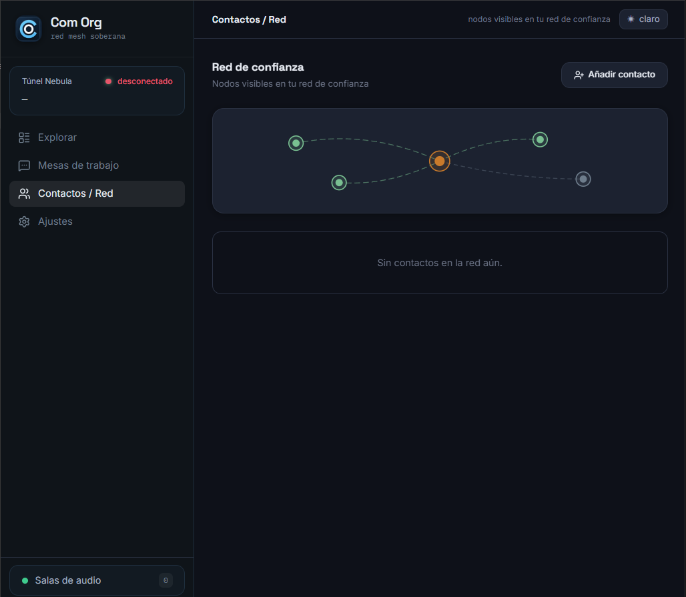
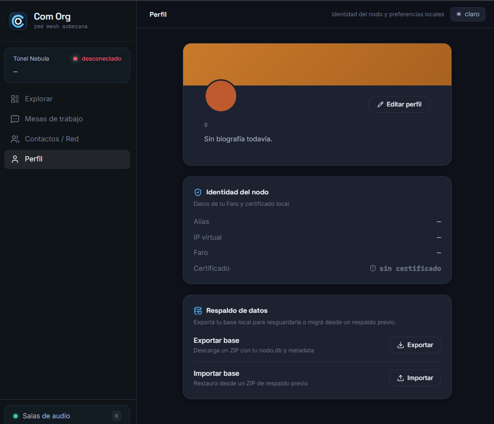
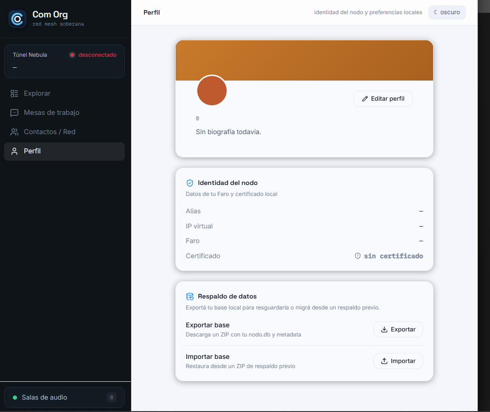
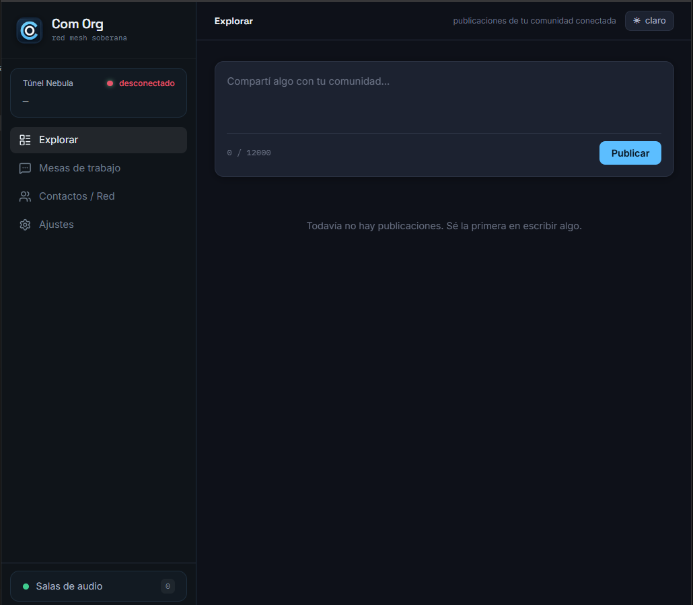
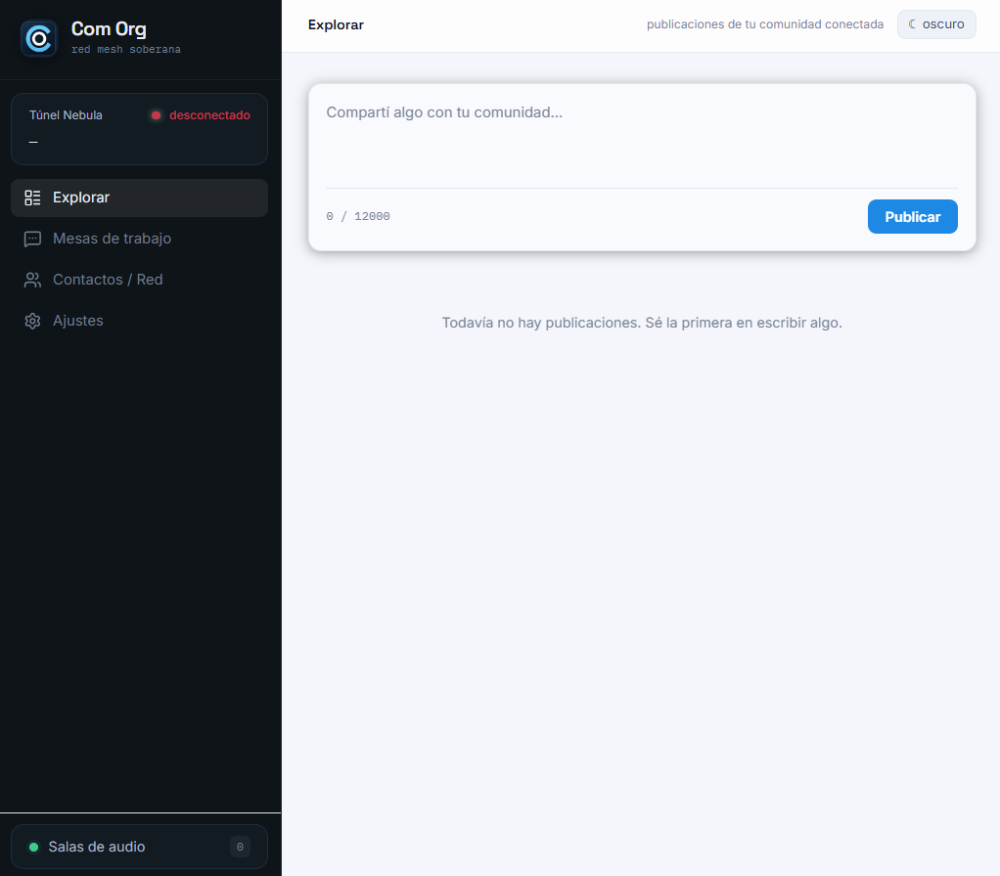
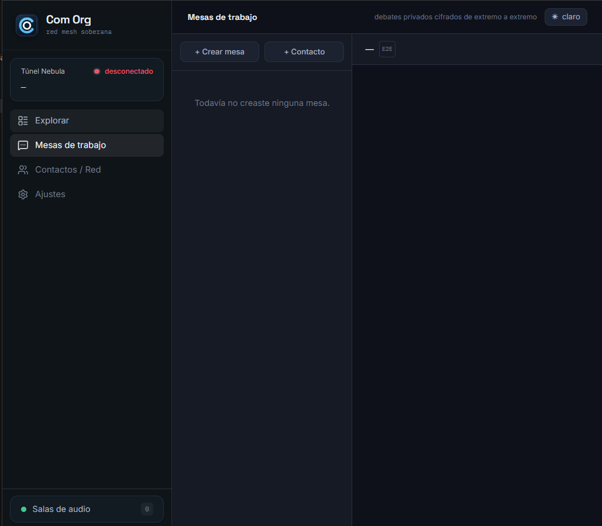
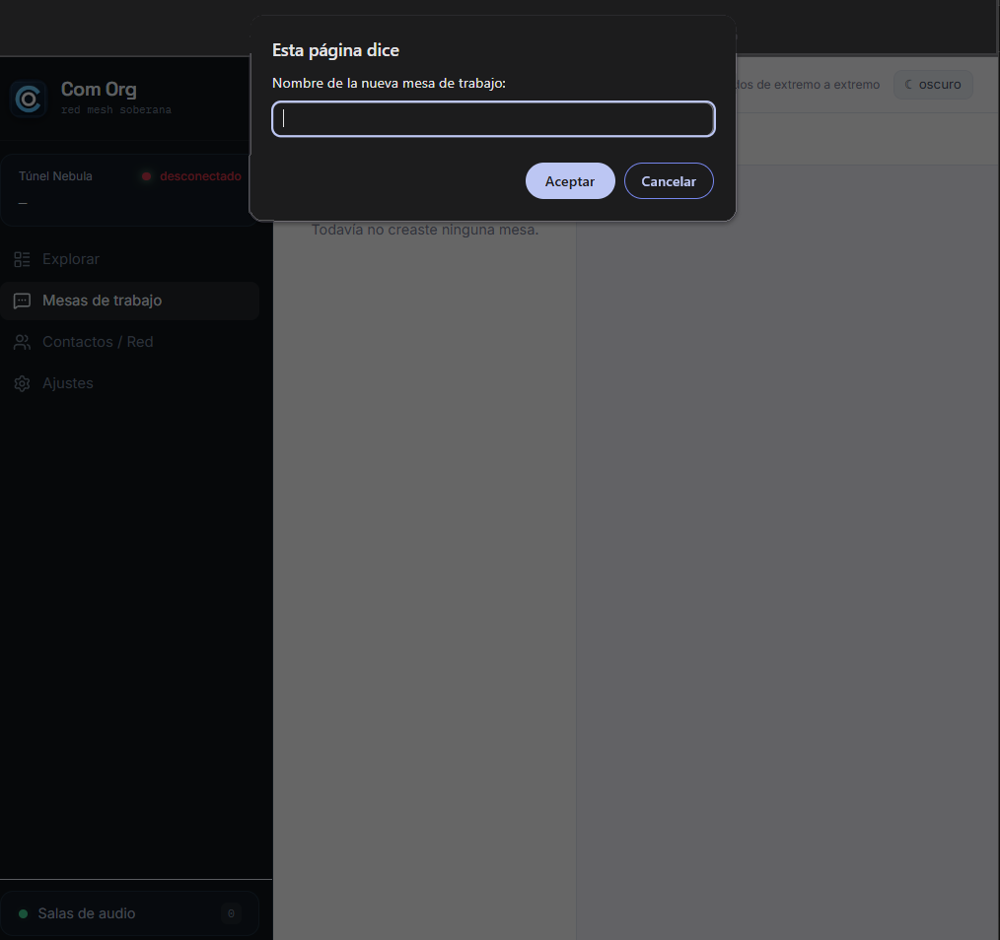
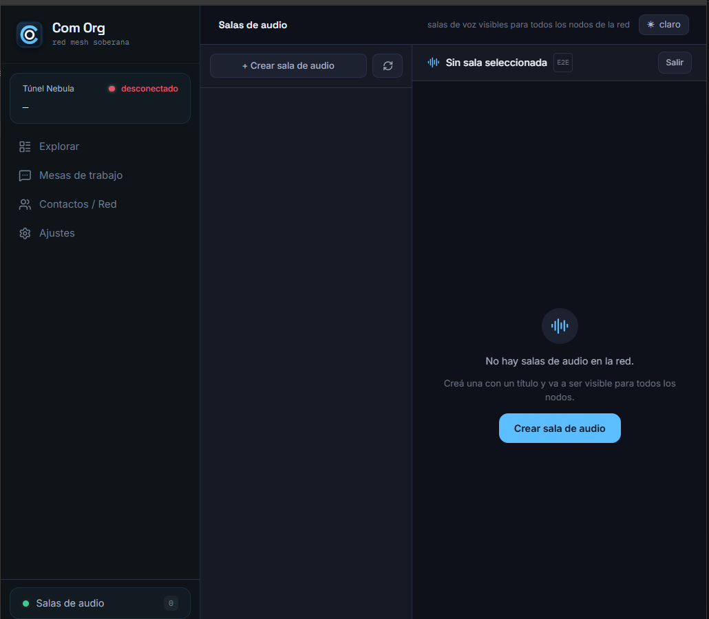
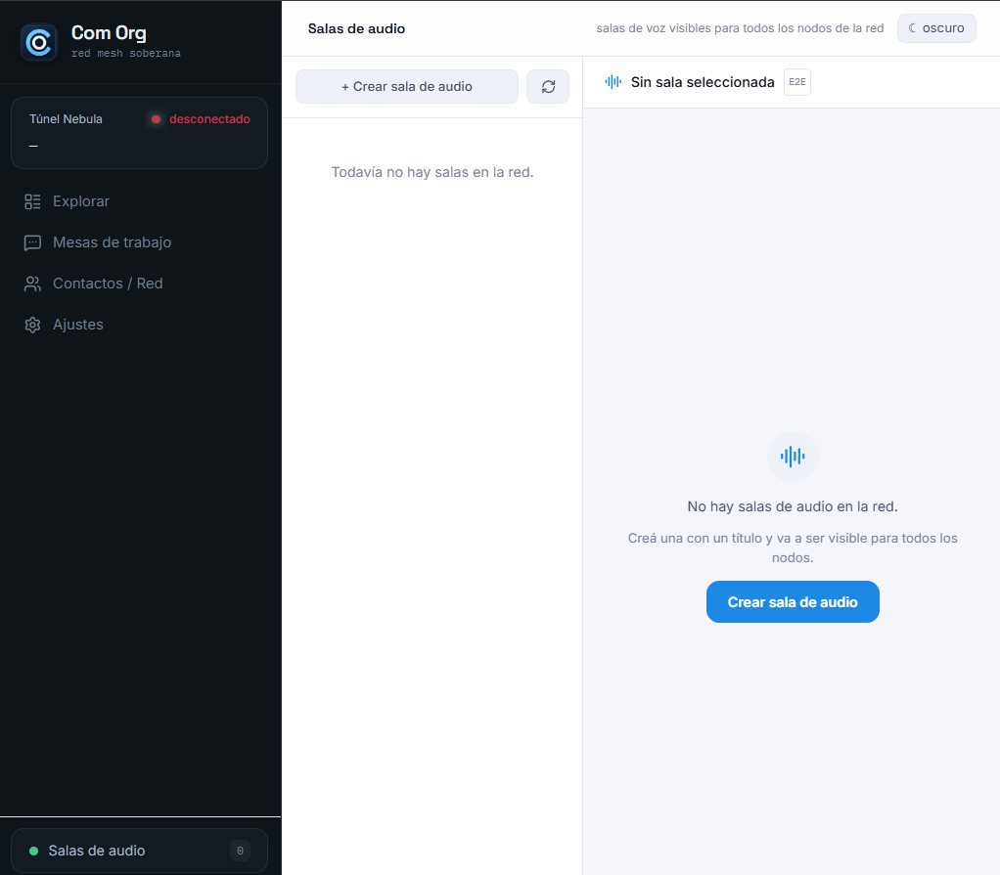

Tu Nodo en la Red
Este manual te explica, paso a paso y sin tecnicismos, como funciona la aplicacion Com-Org, que puedes hacer con ella y como esta protegida tu privacidad.

Que es un nodo?
Imagina una red de luces de Navidad: cada bombillita es un nodo. Si una se apaga, el resto sigue brillando porque no dependen de una sola fuente central.
En Com-Org, tu dispositivo (telefono, tablet o PC) es un nodo. Participa directamente en la red junto con los dispositivos de otras personas de tu organizacion, sin necesitar un servidor central que lo controle todo.
Tu dispositivo
Es tu nodo personal. Envia y recibe mensajes directamente.
Conectado con otros
Cada nodo se conecta con los demas de forma directa, como una malla.
Sin punto unico de fallo
Si un nodo cae, la red sigue funcionando por otros caminos.
Para que sirve la red?
Com-Org es una red de comunicacion disenada para que los miembros de una organizacion puedan hablar, coordinar y colaborar de forma segura, incluso en condiciones adversas (cortes de internet, censura, emergencias).
Lo que la red te permite
- Mensajes cifrados — nadie fuera de la red puede leerlos.
- Voz y texto — comunicacion en tiempo real o asincrona.
- Grupos y roles — organizar equipos dentro de la aplicacion.
- Trabajo sin internet centralizado — la red se auto-organiza.
- Historial protegido — tus conversaciones no se guardan en servidores ajenos.
Los tres componentes de la red
Dentro del ecosistema de Com-Org interactuan tres piezas clave para mantener la comunicacion segura:
Tu Nodo
Eres tu, con tu dispositivo y tu identidad local. Decides en que salas y mesas participar, o usar la app en modo aislado.
El Faro Cero
Servidor de descubrimiento y registro automatico. Actua como guia telefonica cifrada para que los nodos se encuentren; no lee ni guarda mensajes.
La Malla (Mesh)
El camino privado y cifrado (tunel Nebula) que une a todos los nodos conectados directamente entre si.

Tu identidad y tu huella
Al abrir Com-Org por primera vez, el programa genera automaticamente una identidad cifrada unica en tu dispositivo. De ella nace tu huella: un codigo que te identifica ante los demas como una firma digital.


La primera vez que abres la app
Al iniciar Com-Org por primera vez, veras un saludo inicial con dos opciones segun lo que necesites:
Usar sin conectarme
Crea tu identidad local y te permite usar la app solo en tu dispositivo, sin unirte a ninguna red. Ideal para empezar tranquilo.
Conectarme a la red
Te unes a la malla de tu grupo. Solo necesitas la direccion del Faro y, si aplica, un codigo de invitacion (token).
El proceso de unirse (aprovisionamiento)
No tienes que configurar parametros complejos. Com-Org realiza el proceso de conexion de forma automatica:
Que puedes hacer una vez conectado
Una vez dentro de la red, la interfaz de Com-Org te presenta varias secciones principales. Aqui te explicamos cada una:
🗺 Explorar
Muestra el estado de la red, los nodos activos en la malla y la calidad de conexion.


💼 Mesa de Trabajo
Tableros y espacios de mensajes escritos organizados por tema. Cifrados de extremo a extremo y firmados por tu huella.


🔊 Sala de Audio
Conversaciones de voz en vivo y en tiempo real. Quien crea la sala actua como moderador (control de microfono, orden de palabra) y la voz viaja cifrada.


Mensajeria cifrada
Intercambio de mensajes protegidos con cifrado de extremo a extremo.
Documentos y tareas
Coordina avisos y actividades de forma segura en las mesas.
Contactos cercanos
Observa que miembros estan conectados y activos en tu entorno.
El Buffer Ciego: mensajes que siempre llegan
Que pasa si la persona a quien escribes esta desconectada o temporalmente fuera de linea? Aqui entra en accion el Buffer Ciego.
Guardado temporal
El mensaje se conserva de forma cifrada solo el tiempo necesario (TTL) y luego se elimina automaticamente.
Reenvio por vecino
Un nodo cercano ayuda a almacenar y entregar el paquete en cuanto el destinatario regresa a la red.
Ciego por diseno
El nodo que retransmite no puede leer el contenido: viaja totalmente cifrado de extremo a extremo.
Si la red falla: la VPN de contingencia
En situaciones excepcionales donde la malla principal se ve interrumpida, Com-Org dispone de un canal de respaldo cifrado directo entre nodos que ya se conocen.
Medida de emergencia
Disenada para contingencias puntuales, no es la via habitual de comunicacion.
Canal seguro
El enlace se cifra con una clave compartida unicamente entre ambos nodos.
Apagada por defecto
Por seguridad viene desactivada por defecto y se habilita solo cuando sea estrictamente necesario.
Tu privacidad y seguridad, resumidas
Com-Org fue disenado con la privacidad como principio fundamental. Aqui tienes las garantias centrales de la aplicacion:
Cifrado de extremo a extremo
Lo que envias solo lo pueden leer tu y tu destinatario autenticado.
El Faro no espia
El Faro solo facilita el descubrimiento y acceso; nunca lee, guarda ni intercepta mensajes.
Tu identidad es tuya
Vive unicamente en tu dispositivo; tu decides cuando y como conectarte.
Sin rastros innecesarios
Los mensajes temporales en transito se eliminan al cumplir su tiempo de vida.
Glosario rapido
Terminos clave de Com-Org explicados en lenguaje directo y sencillo: